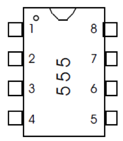
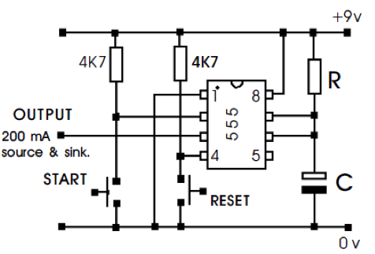
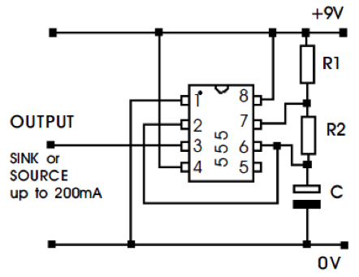
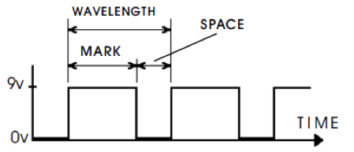
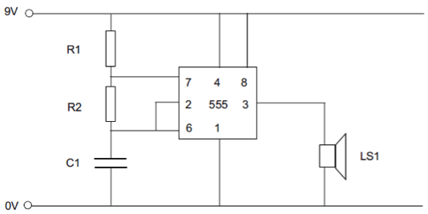
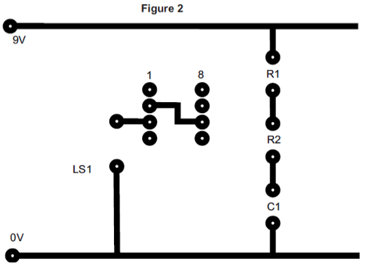
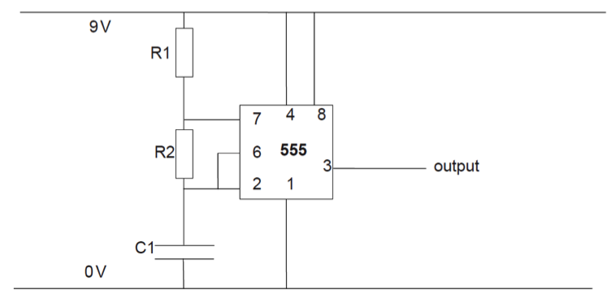
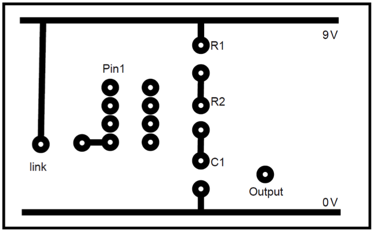

The 555 Timer
Table of Contents
1 Introduction
- Designed in 1971, the 555 timer chip is the most successful integrated circuit in the world. Its purpose is to allow circuits to utilize time (e.g. to make a light flash on and off at a certain interval).
- It can be used as an ASTABLE timer to make flashing light circuits or to make a loudspeaker produce a sound and it can be used as a MONOSTABLE circuit to switch a device on after a set time or to switch a device on for a set time. The 555 makes it easy to get accurate time delays.
- The 555 timer is an 8 pin DIL package containing 25 transistors, 2 diodes and 16 resistors. Its legs are configured as follows :-

- 1. 0v
- 2. Trigger (start)
- 3. Output
- 4. Reset
- 5. Control voltage
- 6. Threshold
- 7. Discharge
- 8. 4.5v-16v supply voltage
555 as a monostable
A mono stable circuit has one input and one output. When the input is made high, the output goes high. When the input goes low, the output stays high for a set time period, then goes low. Astable circuits are easily recognised, and pins 6 and 7 are connected to the positive rail.  The time the output stays high can be calculated with…
T = 1.1 x R x C
e.g. a 1MΩ resistor and a 220µF capacitor…
R= 1,000,000Ω C= 0.00022F T = 242 seconds.
Examples A door lock. When the release button is pushed, the door is unlocked for 3 seconds, then the locked again to give time to open the door.
A hand drier. When a hand triggers the sensor, the drier runs for around 30 seconds before turning off again.
A Circuit Wizard example you can download to experiment with can be picked up here.
555 as an astable
This circuit needs no trigger to start it. As soon as power is supplied the output will begin to oscillate between 9 volts and 0 volts. The time the output spends in each state depends on the values of R1 , R2 and C. The astable circuit can be made to oscillate very quickly (up to millions of cycles per sec) or slowly (down to many minutes per cycle). It can be used to make bulbs flash, drive a loudspeaker to produce a noise or be used as a counter/ timer.  Astable circuits are easily recognised, and pins 2 and 6 are connected, and go to 0v. 
Mark time = 0.7 x (R1 + R2) x C
Space time = 0.7 x R2 x C
Frequency = 1.44 / ((R1 + 2R2) x C)
Examples A tone generator could be made to produce sounds of different pitches through a speaker.
A burglar alarm could have its sensors send a pulse to the alarm box to say its working. If the wire was cut, the lack of a pulse could be used to trigger the alarm.
A strobe bike light could be produced to keep cyclists safe at night
A Circuit Wizard example you can download to experiment with can be picked up here.
2 Understanding Check
Sample Questions
At a small lighthouse, the keeper wants to make their lights come on for a few seconds, then off for a few seconds when the power is turned on to the main light.
- What type of 555 circuit would be needed to achieve this?
- A 555 timer won’t be able to deliver sufficient power to turn on and off the main light. What could be used to handle such a large current safely?
- Make a simulation of this scenario on a breadboard, using an LED. Use a 220µF capacitor, 4.7kΩ for R1 and 10kΩ for R2. What would the mark and space values be?
A student is designing a doorbell with a PTM switch. When the button is pushed, the buzzer should sound for at least 3 seconds, no matter how long the button is held in place.
- What type of 555 circuit is needed?
- If a 220µF (0.000220F) capacitor is used, what sized resistor (to the nearest hundred) would be needed to achieve a 3s time delay?
- Make a circuit for this setup on a breadboard.
Past Paper Questions
June 2010, Q4. You are advised to spend about 30 minutes on this question. This question is about Printed Circuit Board (PCB) design and construction.
(a) It is best to test that a circuit works before building a PCB. Describe one method of testing a circuit before building a PCB. (3 marks) (b) The circuit below pulses the speaker. Complete the missing five PCB tracks on Figure 2 for the circuit in Figure 1. The pads and some of the tracks have been completed for you. Your tracks should not cross at any point and should be drawn neatly.
 
June 2013, Q3. You are advised to spend about 15 minutes on this question. This question is about Printed Circuit Boards (PCBs).
3 (a) Suggest two reasons for using a PCB in a commercial electronic product. Reason 1: Reason 2: (4 marks)
3 (b) State two hazards and two relevant safety precautions to be taken when soldering components to a PCB. Hazard 1: Safety precaution 1: Hazard 2: Safety precaution 2: (4 marks)
3 (c) Shown below is a circuit diagram for a commercial electronic product.  Complete the PCB layout diagram below for the circuit shown above. The PCB layout is viewed from the component side. (6 marks) 